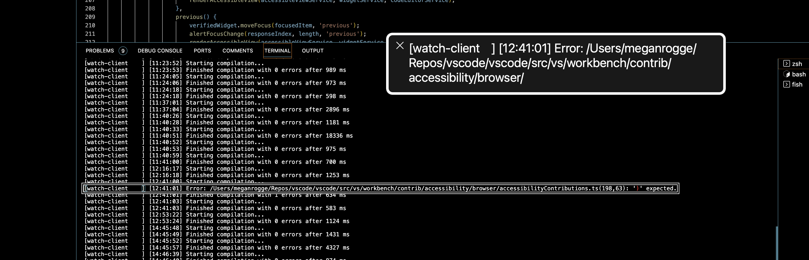

Coding Non-Visually in Visual Studio Code: Collaboration Towards Accessible Development Environment for Blind Programmers
JooYoung Seo ![]()
In this paper, we will showcase a few examples of how blind and sighted developers have been working together to make Visual Studio Code more accessible. Through our collaboration, which is evident in the GitHub issues, pull requests, review process, and insider’s releases we have created together over the past few months, we hope to help other open source developers use these methods to create more accessible development environments.
1 Introduction
An integrated development environment (IDE) is an application that conveniently provides essential functions for the entire programming process, including source editing, compiling and interpreting, and debugging. IDEs have become an essential tool for not only software developers but also STEM engineers and data scientists in many fields to efficiently manage their computing environments [4,6,8]. However, blind developers1 are not able to take advantage of the many features that graphical user interface (GUI)-based IDEs offer [13]. For example, syntax highlighting, code autocompletion and autosuggestion, diagnostics and linting, variable watches and breakpoints are underutilized even among experienced blind programmers, and many blind developers are still working manually with simple text like Notepad, along with runtime and compile terminals [2,3,10]. Behind this problem are intertwined issues of accessibility and learnability. Because different IDEs use different architectures and have different levels of accessibility compliance, blind developers face a new learning curve each time they use an IDE. Blind developers also face the additional challenge of learning the non-visual workaround of accessing an IDE with a screen reader [10]. Although there is a community of blind programmers called Program-L [9] where blind programmers help and support each other, IDEs remain a daunting barrier for blind people.
These difficulties are a major socio-technical barrier to blind developers reaching their full potential in the computing field and to social and professional participation. From the perspective of the social model [11], which recognizes that an individual’s disability may stem from structures and cultures that sociotechnically limit their access rather than from physical, sensory, cognitive, or emotional issues, we can see that IDE accessibility issues are no longer a group-specific problem that blind people must endure, but a collective task for the technology community to reduce barriers together. Specifically, to address these issues, blind and sighted developers need to work together to understand the challenges that blind developers face in using IDEs and then collaboratively find ways to address those challenges. This perspective is consistent with the “interdependent framework” [5,7] that other accessibility researchers have advocated to move away from the dependency of accessibility on the individual with disabilities and instead view accessibility as a shared responsibility of people with and without disabilities and the environment surrounding them.
This paper is the empirical product of blind and sighted developers who have thought deeply about these issues and actively collaborated. We describe how the first author, who is blind, and the second author, who is sighted, have been working together to make the open source IDE Visual Studio Code (VSCode) non-visually accessible and what specific accessibility features have been implemented as a result of our collaboration. In the following sections, we start with some background on how our collaboration began, then present our methods and deliverables. Finally, we’ll share some insights from our collaboration.
2 Background: Visual Studio Code and Accessibility
Visual Studio Code is a lightweight, free, and powerful open-source code editor2 which runs on the desktop and on the web. It is available for Windows, macOS, and Linux. It has built-in support for JavaScript, TypeScript, and Node.js and a rich ecosystem of extensions for other languages and runtimes (such as C++, C#, Java, Python, PHP, Go, .NET, etc.). Accessibility has been a core priority for VSCode since its inception. Among the many architectural elements of VSCode, the following, in particular, has contributed to its accessibility. First, VSCode is a cross-platform application built with the Chromium-based Electron Framework. In other words, VSCode is an application built using web technologies, which gives it the flexibility to follow web accessibility guidelines [1] and respond to the accessibility of various screen readers and assistive technologies regardless of the operating system. Second, Monaco, the primary editor of VSCode, has its own screen reader compatibility mode, which is designed to be selectively turned on and off depending on the user’s intent. Third, Microsoft’s xterm.js terminal, used by VSCode, also provides a separate screen reader accessibility switch in accordance with the Web Accessibility Guidelines. Finally, VSCode is an open-source project where anyone can suggest and fix features on GitHub, and a daily insiders version is built so that real users can quickly use the alpha version and provide feedback to the developers, which in turn leads to a higher quality, user-centered stable version.
The accessibility benefits of VSCode and tips on how to take advantage of them have been shared among members of the Program-L mailing list, a community of blind programmers. In addition, due to its growing popularity among blind programmers, there has been a recent spate of research and development of accessible plug-ins based on VSCode [12,16]. Nevertheless, the fact that VSCode is accessible compared to other IDEs does not necessarily mean that it is easy for blind programmers to use. For example, there is still a constant stream of questions on Program-L about VSCode, not only about its basic usage, but also about features that have already been made accessible in VSCode, such as the terminal, debugging, and the Jupyter Notebook extension, which suggests that many blind programmers are often frustrated by the tricky usability of VSCode accessibility. The following section describes how the authors of this paper collaborated to address this usability issue of VSCode accessibility.
3 Methods
3.2 Co-Design and Expert Review
Our collaborative approach utilized the strategies of co-design and expert review. The co-design methodology fosters a joint creation process between the user and developer, enabling the developer to grasp the user’s requirements and, in turn, develop a product aligning with these needs [15]. In this framework, JooYoung acted as an expert, given his multi-faceted role as a regular VSCode user, an experienced open-source contributor, a data science educator, and an accessibility professional. He outlined his varied computing experiences to Megan and swiftly assessed her accessibility patches.
Their communication began asynchronously via GitHub, debating on issues and potential solutions. Following a few weeks of this pattern, they mutually agreed that scheduled meetings could prove more efficient and productive. JooYoung’s wealth of ideas and insights complemented Megan’s eagerness to learn and her drive to enhance the product’s accessibility. In these sessions, JooYoung demonstrated his use of VS Code by sharing his screen on Zoom, posing queries, and suggesting alterations. Conversely, Megan provided her insights, questioned various aspects, and noted down bugs or features requiring attention. These exchanges facilitated Megan’s understanding of JooYoung’s usage of VS Code and enabled JooYoung to comprehend the product components, which could otherwise remain confusing or undiscovered.
Despite the implementation of regular meetings, asynchronous communication via GitHub and email persisted. Megan regularly composed follow-up emails encapsulating their meeting discoveries prior to circulating them to the entire team. JooYoung further scrutinized these issues, providing comments if anything was overlooked or during the fix-testing process.
4 Co-Designed Deliverables
While nearly all VS Code accessibility fixes and features within the past year are products of this collaboration, below are several of the highlights.
4.1 Terminal Buffer
As discussed in Section 2, xterm.js, the terminal UI utilized by VSCode, incorporates a screen-reader accessibility mode for blind people. However, a discernible gap emerged between accessibility (the ability to access information) and usability (the convenience of use), which led to recurring concerns among blind programmers.
Consider the following scenario: you type and execute the command echo hello; echo world; in the terminal. You will observe hello and world as two separate lines of output. The existing accessibility mode of xterm.js presented this content through a screen reader using an aria-live alert and permitted a line-by-line review of the terminal output history with the Ctrl+UpArrow and Ctrl+DownArrow keys. This works well for short and simple outputs, but for lengthy outputs with intricate error messages or computational results, a swift speech-to-text message is insufficient for capturing substantial information in human working memory.
An additional concern is that Ctrl+Up/DownArrow navigation keys, designed to review terminal history, deliver the entire contents of the focused line to the screen reader as a single object. This makes detailed examination of terminal contents on a character or word basis challenging. Blind users had to switch the reading mode using the screen reader’s virtual cursor (i.e., browse mode in NVDA; QuickNav mode in VoiceOver) to review the terminal content more thoroughly. To resume terminal input, they had to disable the virtual cursor and return to forms mode (focus mode in NVDA; QuickNav off in VoiceOver), leading to significant inconvenience.
JooYoung initiated a discussion on the official Microsoft VSCode GitHub page, bringing attention to these issues and proposing solutions (microsoft/vscode#98918: Terminal output div container should be more accessible for screen readers). Megan, meanwhile, developed terminal shell integration, a feature allowing VS Code to comprehend terminal activities, facilitating user-friendly command navigation, command output copying, and more. JooYoung demonstrated that the terminal buffer remained inaccessible for screen reader users, as it didn’t support arrow key navigation. He proposed that the output view’s accessible experience be integrated into the terminal. Upon discussing with a colleague, Megan incorporated the same underlying component into the terminal, making the previously inaccessible terminal buffer navigable via arrow keys for blind users.
More specifically, he suggested replacing the terminal output with a text editor buffer that supported standard arrow-key navigation. The implementation, requiring over a year of technical experimentation and collaborative testing, yielded fruitful results. Initial efforts to redirect the terminal output web container, designated as “list”, to aria “document” or “textbox” landmarks proved unsatisfactory due to varying screen reader and platform support levels for aria. The terminal output was then converted into a text area with “contenteditable” and “readonly” attributes, which also did not gel with the screen reader’s speech buffer. Eventually, we created a separate accessible terminal buffer by transferring the terminal output to VSCode’s native Monaco editor, ensuring optimal accessibility and usability for all blind users on all platforms and screen readers. This feature, well-received by many blind users in the Program-L community, was officially introduced in the VSCode stable version 1.75. Figure 1 illustrates how the terminal buffer operates, demonstrating VoiceOver focusing on an error line in a task terminal and reading it out loud.

4.2 Git Diff and Audio Cues
Git has been around for decades as a version control tool like SVN, but its popularity has really taken off with the rise of open-source social coding platforms based on Git, such as GitHub and GitLab. Naturally, there have been many personal and social needs for blind people to utilize Git in collaborative environments. git is originally a Unix-based command-line tool, so in terms of accessibility, blind people can use a screen reader to fully utilize Git in a terminal. However, since Git has over 100 core Git commands, and the number of possible combinations could be in the millions, using Git via the command line takes a lot of effort and time to become proficient. In response, various tools have emerged that allow you to use Git as a GUI, and VSCode is a very popular IDE that supports a collaborative environment using Git.
Git provides a track changes feature that allows you to compare changes between files in an asynchronous collaborative environment, called git diff. Literally, the git diff command compares and shows the differences between a file and a file, or between a commit and a commit, with newly added lines in green and + and removed lines in red and - prefixed. VSCode had always provided an accessible git diff function for screen reader users. With the files or commits users want to compare open, pressing F7 (Go to Next Difference) and Shift+F7 (Go to Previous Difference) would skip to the area where the differences are, prefixing the line with the change with a + or - sign to indicate the nature of the change. Of course, this approach was fine from an accessibility standpoint, but there was room for improvement in terms of usability and convenience for blind users. For example, visual affordances like color coding and +- signs in git diff allowed sighted people to skim quickly, but blind people had to listen to additional speech prefixes, pronounced + (plus) and - (dash), serially and wait for information before each change. Furthermore, depending on the punctuation pronunciation settings of the screen reader, the +- sign could be omitted and delivered to the screen reader.
To address this, JooYoung suggested adding non-visual, non-speech, and audible affordances to git diff in addition to +- signatures, so that blind people can hear and understand them easily microsoft/vscode#147226: [Accessibility] Consider adding audio cues for diffs (added / deleted code). Audio cues are non-speech sound effects, an accessibility feature that VSCode and Microsoft’s other IDE, Visual Studio, have just begun to support, and TV Raman demonstrated their usefulness in non-visual programming many years ago when he developed Emacspeak, referring to them as earcons as an alternative to icons [14]]. For example, audio cues allow the editor to quickly recognize if the current line of code contains an error or a warning, instead of just saying “error” or “warning” verbally, the editor will read out the unique sound associated with the error or warning. These sounds can also be delivered in parallel with text-to-speech information from a screen reader, allowing blind programmers to quickly perceive the context of the code, similar to the benefits of quickly scanning code with different color coding for those who receive visual feedback on code with their eyes.
JooYoung had several Zoom meetings with Megan and Amnon Freidlin (Microsoft’s sound designer), and through an iterative process, finalized the three audio cues used in the git diff context. These were the diff line Inserted sound, which is heard when something new is added (+), the diff line Deleted sound, which is heard when something existing is removed (-), and the diff line Modified sound, which is heard when something existing is modified (+-, -+). Our success came with some trial and error. For example, an early problem was that the Diff Line Inserted and Diff Line Deleted sounds had a similar range and texture, making it difficult to distinguish between them. JooYoung realized that this was a common complaint in Program-L beyond her personal experience, so she worked with the sound designer to test and finalize a sample file that was as self-explanatory as possible and didn’t interfere with the sound of screen reader speech. Of course, we had to leave the potential issue of the static audio cues we chose not being able to adequately accommodate users with hearing impairments in certain ranges as a future work in progress, but this feature greatly improved the usability of our non-visual programming.
4.3 Verbosity Settings and Help Menus
JooYoung created issues pointing out places where minor tweaks to the order or content of an aria label could yield massive productivity improvements for screen reader users. Megan fixed some such instances and pointed team members toward others, providing guidance about best practices going forward.
Megan started self hosting with a screen reader shortly after this in order to proactively identify other problems. She felt overwhelmed by the noise and noticed some content was repeated ad nauseum, so created an issue and sought the feedback of JooYoung, who suggested that screen reader verbosity settings remedy this and a similar approach could be applied to VS Code’s aria content.
Additionally, JooYoung shared that while it was helpful to meet and learn about the new features via our meetings, most screen reader users did not have this luxury. Megan and her colleague, Daniel, brainstormed about a discoverable way for screen reader users to find out about terminal features. Upon terminal focus, an aria label conveyed how to access the terminal’s accessibility help menu. To reduce noise, this hint could be disabled with a verbosity setting. Since then, help menus and verbosity settings have been added for the Copilot inline and panel chat, notebook, and other features. For example, the terminal accessibility help menu contains helpful information for screen reader users such as commands to run (Figure 2). A screen reader user can use arrow keys to read the content line by line, character by character.

4.4 Accessibility Testing Initiative
The VS Code team tests new features at the end of every month before each release. Megan noticed that while the team tested each platform - MacOS, Linux, and Windows, they were not testing the screen reader experience. A new protocol has been established to ensure better coverage going forward; the iteration following a feature’s release, the team will test the feature using screen readers. Retroactive testing of features is currently underway to make up for this historical oversight. JooYoung’s creation of issues about old and new features alike inspired and justified this initiaive.
5 Discussion and Conclusion
Our ongoing collaboration between sighted and blind developers underlines the importance and potential of improving accessibility in open-source tools, specifically illustrated by our work on Visual Studio Code. A notable success is the terminal accessible buffer, a solution initially created for screen reader users, that proved to be beneficial for a wider user base as seen here.
Furthermore, knowledge sharing, epitomized by Megan and JooYoung’s livestream presentation, is a cornerstone in promoting an inclusive, democratic coding and programming culture.
The urgency of addressing accessibility early in the development process has been a vital lesson from our collaboration. Postponing such efforts can create significant barriers for screen reader users, therefore prioritizing these enhancements is crucial.
Moreover, we are enthusiastically working on Copilot, an AI-based, Language Model (LLM) feature, with a dedicated focus on its accessibility for blind programmers. Anticipating the considerable potential of Copilot, we are committed to ensuring that blind programmers can utilize this technology without delay, rather than having to wait for subsequent accessibility improvements.
Drawing these threads together, our co-design efforts emphasize the necessity of creating a more equitable coding environment where all programmers, regardless of their disabilities, can participate fully. Our ongoing engagement and activities on GitHub aim to serve as a motivation and guide for other open-source developers towards similar endeavors of inclusive development.
6 Acknowledgments
We extend our gratitude to Program-L, an online community of blind programmers, for their invaluable feedback and testing of VS Code, as well as their insightful accessibility suggestions. We also appreciate the VS Code team for their commitment to accessibility. Special thanks to Isidor Nikolic, Kai Maetzel, and Daniel Imms for their dedication and invaluable insights; to Raymond Zhao and Roberto Perez for enhancing the site’s accessibility; to José Vilmar Estácio de Souza and Amnon Freidlin for their diligent testing and collaboration.
References
7 Appendix
8 Appendix: VSCode Accessibility Discussions on GitHub
The following are JooYoung’s GitHub contributions, including issues, pull requests, comments, and mentions, related to accessibility up to the time of this paper’s submission.
$ gh search issues --repo microsoft/vscode --include-prs --involves jooyoungseo -L 200issue microsoft/vscode 186857 open [Accessibility] Checkboxes are unlabeled in `Export Profile...` bug, accessibility 2023-07-03T15:16:09Z
issue microsoft/vscode 186754 open data science audio and text graph for visually impaired person feature-request, accessibility 2023-07-03T15:44:25Z
issue microsoft/vscode 186679 open Alert that the help hint has been disabled bug, accessibility 2023-06-29T21:41:13Z
issue microsoft/vscode 186678 open Change accessible buffer command navigation keybinding for screen reader users feature-request, macos, terminal-accessibility 2023-06-30T13:21:00Z
issue microsoft/vscode 186676 open add accessible view provider for inline chat response feature-request, accessibility, inline-chat 2023-06-29T21:32:04Z
issue microsoft/vscode 186675 open when next/previous ghost text suggestion is shown, we don't alert screen reader users bug, accessibility, ghost-text 2023-06-29T21:28:38Z
issue microsoft/vscode 186673 closed have accessible view for ghost text completions feature-request, accessibility, *duplicate 2023-07-03T15:42:17Z
issue microsoft/vscode 186659 closed Sticky scroll for screen reader users feature-request, accessibility 2023-06-30T16:08:19Z
issue microsoft/vscode 186514 closed Closing accessibility hint doesn't stop VoiceOver from reading it bug, verified, accessibility, under-discussion, insiders-released 2023-06-29T19:24:58Z
issue microsoft/vscode 185705 closed Consider providing screen reader with the chat response for inline chat feature-request, on-testplan, on-release-notes, insiders-released, inline-chat 2023-07-03T18:34:05Z
issue microsoft/vscode 185691 closed Consider which audio cues for chat experience should be enabled by default accessibility, under-discussion, insiders-released 2023-06-26T06:42:23Z
issue microsoft/vscode 185565 open Accessibility: Cannot turn off audio cues on a language level feature-request, accessibility 2023-06-20T09:20:16Z
issue microsoft/vscode 185371 open Review usage of `aria-live: assertive`, `alert` throughout the code base feature-request, accessibility 2023-06-27T01:54:57Z
issue microsoft/vscode 185155 open Alert screen reader users that something has occurred when `clear` is used feature-request, accessibility, terminal, under-discussion 2023-06-14T19:15:24Z
pr microsoft/vscode 185153 merged prevent screen reader from reading a user's chat request on enter 2023-06-15T16:22:31Z
issue microsoft/vscode 184357 open [Accessibility]: Make syntax highlight accessible to screen reader users via a speech scheme feature-request, accessibility, grammar 2023-06-05T21:24:47Z
issue microsoft/vscode 184176 closed Add notebook accessibility help menu feature-request, verified, accessibility, verification-needed 2023-06-27T22:19:25Z
issue microsoft/vscode 184173 closed Accessibility: Take out extra messages from Notebook verbosity FALSE feature-request, verified, accessibility, verification-needed 2023-06-27T23:43:35Z
issue microsoft/vscode 183567 open Explore improvements to notifications when using a screen reader accessibility, workbench-notifications 2023-05-26T18:28:27Z
issue microsoft/vscode 183363 closed Make accessibility help generic feature-request, accessibility, on-testplan, on-release-notes 2023-07-03T18:27:36Z
issue microsoft/vscode 183030 closed Reading suggestions or autocomplete of extensions bug, verified, accessibility, insiders-released 2023-06-01T13:49:56Z
issue microsoft/vscode 182682 open Merge editor accessibility accessibility, merge-editor 2023-06-21T12:11:29Z
pr microsoft/vscode 182666 merged outweigh normal editor accessibility help menu 2023-06-30T23:23:35Z
issue microsoft/vscode 181732 closed Accessibility: Make drag-and-drop accessible via keyboard bug, accessibility, *as-designed 2023-05-09T21:25:26Z
issue microsoft/vscode 181139 open Accessibility: Make Tab key focus restricted to the currently open view accessibility, under-discussion 2023-05-05T10:32:09Z
issue microsoft/vscode 181060 closed BAccessibility: Pressing Shift+Tab key in Ctrl+F moves to terminal area accessibility 2023-04-28T15:10:26Z
issue microsoft/vscode 180970 closed provide alt text for image outputs feature-request, accessibility, verification-needed, notebook-output 2023-06-27T22:45:09Z
pr microsoft/vscode 180776 merged fix windows quick fixes 2023-06-09T23:22:27Z
issue microsoft/vscode 180729 closed Investigate merge editor accessibility bug, accessibility 2023-05-23T17:26:49Z
issue microsoft/vscode 180725 open interacting with components should be consistent accessibility, extensions 2023-06-26T16:40:31Z
issue microsoft/vscode 180653 closed [Accessibility]: Present content first in References Treeview help wanted, accessibility, references-viewlet, insiders-released 2023-05-15T06:59:23Z
issue microsoft/vscode 180221 open Accessibility: Ctrl+Down/UpArrows does not work in Tree find control feature-request, accessibility 2023-06-26T16:28:30Z
issue microsoft/vscode 180216 closed [Accessibility]: Typing characters does not move focus in File Explorer View *duplicate 2023-06-02T23:22:43Z
issue microsoft/vscode 180176 open [Accessibility]: Consider replacing audioCues.lineHasInlineSuggestion with less distruptive lower-pitch sound feature-request, accessibility 2023-06-08T19:33:38Z
issue microsoft/vscode 180083 open Accessibility: Make Debug Console follow terminal tabFocusMode accessibility, under-discussion 2023-04-17T15:37:14Z
issue microsoft/vscode 180049 open [Accessibility]: Support filtering symbol types in Document Sylbol View feature-request, accessibility 2023-06-07T12:54:15Z
issue microsoft/vscode 179981 open Focus does not stay in the editor area after sending selection to terminal bug, accessibility, terminal-editors 2023-04-14T16:35:31Z
issue microsoft/vscode 179979 closed Accessibility: Ctrl+Up/DownArrows does not work in terminal created in editor area info-needed, terminal-accessibility 2023-05-29T23:22:12Z
issue microsoft/vscode 179970 closed Accessibility: Make Ctrl+RightArrow expand all in tree views accessibility, *duplicate 2023-04-24T15:36:11Z
issue microsoft/vscode 179969 closed Make filtering more flexible in Problem View info-needed, error-list 2023-06-09T23:22:27Z
issue microsoft/vscode 179967 open Accessibility: Generalize Ctrl+DownArrow and Ctrl+UpArrow to all input-result widgets feature-request, accessibility 2023-07-03T15:03:39Z
issue microsoft/vscode 179964 open Accessibility: Improve Problem View search input accessibility, error-list 2023-04-14T17:12:28Z
issue microsoft/vscode 179718 closed search result aria label should prioritze content over location feature-request, verified, search, accessibility, verification-needed 2023-04-26T21:43:24Z
issue microsoft/vscode 179717 closed Problems aria label should prioritize content over location feature-request, verified, accessibility, verification-needed, insiders-released 2023-04-25T23:46:10Z
issue microsoft/vscode 179716 open Allow configuring what is included in the accessible buffer feature-request, terminal-accessibility 2023-05-01T16:28:58Z
issue microsoft/vscode 179283 closed [Accessibility]: Make "Go to line" announce focused line after executed bug, verified, accessibility, on-release-notes, insiders-released 2023-04-27T22:30:48Z
issue microsoft/vscode 179272 closed [Accessibility]: Add shortcut keys to jump between executed commands in terminal buffer feature-request, verified, verification-needed, on-release-notes, insiders-released, terminal-accessibility 2023-05-22T23:22:24Z
issue microsoft/vscode 179123 closed [Accessibility]: `Search: Find in Files, Control+Shift+F` could be made more accessible. feature-request, verified, search, accessibility, verification-needed, search-editor, insiders-released 2023-04-26T00:00:22Z
issue microsoft/vscode 178935 closed [Accessibility] Audio cues stopped working in Chrome accessibility, *duplicate, regression 2023-04-03T18:41:30Z
issue microsoft/vscode 178915 closed [Accessibility] Make sticky scroll view line indentation accessible feature-request, accessibility, editor-sticky-scroll 2023-04-04T13:34:14Z
issue microsoft/vscode 177755 closed [Accessibility]: Switching editor (Ctrl+Tab) does not work from a11y terminal buffer bug, verified, insiders-released, terminal-accessibility 2023-05-07T23:22:02Z
issue microsoft/vscode 177697 closed `Terminal: navigate accessible buffer` does not work sometimes bug, verified, insiders-released, terminal-accessibility 2023-05-06T23:22:51Z
issue microsoft/vscode 177696 closed Inline suggestion is read twice by the screen reader bug, verified, accessibility, insiders-released 2023-04-17T19:56:08Z
issue microsoft/vscode 177694 closed add command to repeat most recent notification accessibility, workbench-notifications 2023-04-21T16:32:24Z
issue microsoft/vscode 177029 closed [Accessibility]: `Set Selection Anchor` and `Select from Anchor to Cursor` does not work in a11y terminal buffer feature-request, verified, verification-needed, on-release-notes, insiders-released, terminal-accessibility 2023-05-20T23:21:33Z
issue microsoft/vscode 176779 open Make error in line audio cue configurable feature-request, accessibility 2023-04-21T16:24:18Z
issue microsoft/vscode 176521 open [Accessibility] Support task completion/failure audio cues in Output feature-request, accessibility 2023-03-27T18:18:03Z
issue microsoft/vscode 176293 closed Prefer SVG renderers for image output to improve screen reader fidelity accessibility, notebook-output 2023-04-26T19:23:55Z
issue microsoft/vscode 176292 open improve screen reader context and navigation of Cell outputs accessibility, notebook-output 2023-05-25T20:18:24Z
issue microsoft/vscode 176290 open consider default keybindings for go to next / previous cell input accessibility, under-discussion, notebook-ipynb 2023-03-06T20:04:03Z
issue microsoft/vscode 176286 closed `allowNavigateToSurroundingCells` should be false when screen reader is detected bug, verified, accessibility, insiders-released, notebook-ipynb 2023-04-27T21:43:54Z
issue microsoft/vscode 176242 open Notify screen reader users that a VS Code update is available feature-request, accessibility, under-discussion 2023-03-06T19:35:08Z
issue microsoft/vscode 175986 open Allow VS Code extensions to trigger audio cues feature-request, accessibility 2023-04-03T03:47:49Z
pr microsoft/vscode 175823 merged provide screen reader with inline suggestions 2023-04-21T23:22:48Z
issue microsoft/vscode 175743 open Output of Jupyter notebook cells is not intuitively accessible with screen readers bug, accessibility, notebook-output 2023-03-01T17:41:14Z
issue microsoft/vscode 175432 closed [Accessibility] Pressing Ctrl+M key (toggle tabFocusMode) should save separate boolean value for terminal and editor. info-needed 2023-04-13T23:22:32Z
issue microsoft/vscode 175348 open Refine error on line audio cue feature-request, accessibility 2023-02-27T15:20:54Z
issue microsoft/vscode 175341 closed [Accessibility] Some thoughts on error in line audio cue bug, verified, accessibility, candidate 2023-02-25T02:17:13Z
issue microsoft/vscode 175282 open [Accessibility] Do not use title attribute when labeling buttons bug, accessibility 2023-02-24T15:17:49Z
issue microsoft/vscode 175177 closed [Accessibility] Remove repeated word from the terminal help bug, verified, insiders-released, terminal-accessibility 2023-04-08T23:22:02Z
issue microsoft/vscode 175175 closed [Accessibility] "Go to Recent Directory (Control+G)" instruction is not included in terminal a11y help when cmd prompt is used bug, verified, insiders-released, terminal-accessibility 2023-04-08T23:22:02Z
issue microsoft/vscode 175162 closed assign different default keybinding for focusing the accessible buffer under-discussion, terminal-accessibility 2023-04-13T23:22:33Z
issue microsoft/vscode 175140 closed Add a command that accepts a notification's default action feature-request, accessibility, on-testplan, on-release-notes, insiders-released 2023-03-23T20:20:35Z
issue microsoft/vscode 175111 closed [Accessibility] Redundant read-only terminal buffer needs to be removed from the tab focus cycle. bug, verified, confirmed, insiders-released, terminal-accessibility 2023-04-08T23:22:02Z
issue microsoft/vscode 175105 closed [Accessibility] Reconsider the UI design for {"editor.screenReaderAnnounceInlineSuggestion": true} accessibility 2023-03-16T19:45:12Z
issue microsoft/vscode 175014 closed Replace diff line modified/deleted/ inserted audio cues with punchier, more distinct ones feature-request, verified, accessibility, candidate, verification-needed, on-release-notes, insiders-released 2023-04-28T11:18:47Z
issue microsoft/vscode 175013 closed On focus of the accessible buffer, if the last command failed, play audio cue terminal-accessibility 2023-05-14T23:22:16Z
issue microsoft/vscode 175012 closed Use more succinct audio cue when terminal command fails feature-request, verified, polish, verification-needed, insiders-released, terminal-accessibility 2023-04-13T23:22:33Z
issue microsoft/vscode 175011 closed position the cursor at the end of the accessible buffer by default bug, verified, insiders-released, terminal-accessibility 2023-04-08T23:22:02Z
issue microsoft/vscode 174857 closed [Accessibility] Line-by-line audio cues are not played when column position is away from the event trigger spot bug, verified, accessibility, insiders-released 2023-02-24T18:14:07Z
issue microsoft/vscode 174800 closed [Accessibility] Shift+Tab is always forced to go to a11y terminal buffer even when insert tab character mode is used bug, verified, insiders-released, terminal-accessibility 2023-04-14T23:22:37Z
issue microsoft/vscode 174798 closed [Accessibility] Remove redundant 4-5 blank lines from the terminal a11y buffer bug, verified, terminal-accessibility 2023-04-09T23:21:56Z
issue microsoft/vscode 174797 closed [Accessibility] python repl content is not parsable in the a11y terminal buffer when Powershell is used under-discussion, terminal-accessibility 2023-04-13T23:22:33Z
issue microsoft/vscode 174793 closed [Accessibility] Consider adding a setting to preserve focus in a11y terminal buffer terminal-accessibility 2023-04-13T23:22:33Z
pr microsoft/vscode 174606 merged add setting for aria-live assertive alert for ghost text 2023-04-07T23:22:04Z
issue microsoft/vscode 174368 closed Play audio cue when a command exits with non-zero code feature-request, verified, accessibility, on-release-notes, insiders-released 2023-02-24T19:11:28Z
issue microsoft/vscode 174367 closed Mention `Terminal: Create Terminal with Profile` in terminal a11y help menu bug, verified, polish, insiders-released, terminal-accessibility 2023-04-04T23:22:02Z
issue microsoft/vscode 174365 closed Suggest screen reader users migrate from `cmd prompt` -> `pwsh` feature-request, verified, windows, under-discussion, insiders-released, terminal-accessibility 2023-04-15T23:22:12Z
issue microsoft/vscode 174362 open Next suggestion isn't read bug, accessibility 2023-03-13T09:34:44Z
issue microsoft/vscode 174360 open When in `tabFocusMode`, assign a different keybinding for inline suggestion acceptance bug, important, accessibility 2023-02-14T15:52:55Z
issue microsoft/vscode 174359 open Add more audio cues feature-request, accessibility 2023-03-02T16:46:57Z
issue microsoft/vscode 174079 closed Add symbol provider for terminal accessible buffer feature-request, on-testplan, on-release-notes, insiders-released, terminal-accessibility 2023-04-29T23:22:19Z
issue microsoft/vscode 173622 closed No indication of ghost text and actions via screen reader accessibility, *duplicate, ghost-text 2023-02-16T16:33:41Z
issue microsoft/vscode 173532 closed I can no longer access terminal accessibility buffer with orca bug, verified, accessibility, author-verification-requested, insiders-released 2023-02-23T18:22:23Z
issue microsoft/vscode 173452 closed [Accessibility] Add page up/down support for accessible buffer feature-request, verified, verification-needed, on-release-notes, terminal-accessibility 2023-05-13T23:22:00Z
issue microsoft/vscode 173451 closed [Accessibility] Make `editor.action.toggleTabFocusMode` configurable in user settings feature-request, accessibility, on-testplan, on-release-notes, insiders-released 2023-02-24T19:11:35Z
issue microsoft/vscode 172606 closed [Accessibility] Go to next/previous change commands don't provide deleted line content to screen readers feature-request, info-needed, accessibility 2023-02-06T12:29:34Z
issue microsoft/vscode 172582 closed [Accessibility] Terminal a11y buffer is not automatically updated bug, verified, on-release-notes, insiders-released, terminal-accessibility 2023-05-08T23:23:05Z
issue microsoft/vscode 172525 closed [Accessibility] Error audio cues are not played on a character level. bug, feature-request, verified, accessibility, on-release-notes, insiders-released 2023-02-24T19:12:34Z
issue microsoft/vscode 172523 closed [Accessibility]: Audio Cues are notplayed a against swift arrow navigation bug, verified, accessibility, insiders-released 2023-02-22T20:44:00Z
issue microsoft/vscode 172465 closed Reduce noise for screen reader users feature-request, verified, accessibility, verification-needed, under-discussion, insiders-released 2023-04-27T14:20:51Z
issue microsoft/vscode 172458 closed in diff view, line selection shouldn't happen on cursor move bug, verified, accessibility, insiders-released 2023-01-27T17:35:02Z
issue microsoft/vscode 172399 closed tab has to be pressed twice to go back to the terminal buffer from accessibility mode bug, verified, accessibility, terminal-accessibility 2023-01-25T21:47:17Z
pr microsoft/vscode 172276 merged xterm@5.2.0-beta.21 2023-03-11T23:23:27Z
issue microsoft/vscode 172204 closed Screen reader accessibility mode reads terminal contents character by character *as-designed 2023-03-10T23:23:43Z
issue microsoft/vscode 172149 open [Accessibility] Command history is not readable in terminal input field via Up/DownArrow bug, accessibility, confirmed, terminal-input 2023-02-02T19:35:29Z
issue microsoft/vscode 172024 closed [Accessibility] Ctrl+M (editor.action.toggleTabFocusMode) does not work inside terminal input field bug, verified, accessibility, insiders-released, terminal-input 2023-02-22T10:21:22Z
issue microsoft/vscode 172007 closed Terminal accessibility buffer does not read output upon enter bug, verified, accessibility, insiders-released 2023-01-26T23:05:07Z
issue microsoft/vscode 172006 closed Make terminal accessibility buffer read only upstream, accessibility, insiders-released 2023-01-29T02:47:23Z
issue microsoft/vscode 171918 closed [Accessibility] Support Home and End keys in Open Detected Link view accessibility, terminal-links 2023-01-23T17:06:42Z
issue microsoft/vscode 171916 closed [Accessibility] Ctrl+Shift+O does not close Open Detected Link view *as-designed, terminal-links 2023-03-09T23:24:58Z
issue microsoft/vscode 171914 closed [Accessibility] Make terminal a11y buffer even more accessible accessibility 2023-01-25T12:46:00Z
issue microsoft/vscode 171755 open Code lens is not accessible via screen reader accessibility, under-discussion, code-lens 2023-04-28T16:00:19Z
issue microsoft/vscode 171544 closed sometimes audio cues don't play when going to next/previous difference bug, verified, accessibility, insiders-released 2023-03-03T23:24:20Z
issue microsoft/vscode 171429 closed [Accessibility] Diff editor cursor position is not preserved after escaping from F7 diff pane 2023-04-04T23:22:02Z
issue microsoft/vscode 171426 open [Accessibility] Diff editor cursor position is not preserved after escaping from F7 diff pane feature-request, accessibility 2023-06-08T17:03:22Z
issue microsoft/vscode 171256 closed [Accessibility] Trigger diff audio cues against standard arrow key navigation in diff view feature-request, accessibility, on-testplan, insiders-released 2023-02-27T23:24:26Z
issue microsoft/vscode 171253 open [Accessibility] Allow users to customize the audio cue play priority feature-request, accessibility 2023-01-13T17:40:50Z
issue microsoft/vscode 171200 closed support screen reader reading the line and audio cues when go to next/previous diff are used in diff view feature-request, verified, accessibility, on-testplan, insiders-released 2023-02-27T23:24:27Z
issue microsoft/vscode 171199 open Accessibility getting started experience feature-request, accessibility, under-discussion 2023-06-26T08:30:36Z
pr microsoft/vscode 170985 merged support screen reader reading the line when go to next/previous diff are used 2023-02-25T23:23:51Z
issue microsoft/vscode 170971 closed [Accessibility]: Allow users to replace default sound file *duplicate 2023-02-24T23:24:11Z
issue microsoft/vscode 169853 closed Explore plain content editable element for terminal buffer instead of navigation mode feature-request, accessibility, terminal, on-testplan, on-release-notes 2023-03-06T23:24:33Z
issue microsoft/vscode 168746 open [Accessibility] Word wrap does not work in diff view (F7 and Shift+F7) feature-request, accessibility, diff-editor 2022-12-12T15:35:40Z
pr microsoft/vscode 167349 closed fix #167348: add aria-live 2023-02-16T17:31:02Z
issue microsoft/vscode 167348 closed [Accessibility] div.monaco-tokenized-source requires aria-live="assertive" accessibility, under-discussion, inline-completions 2023-05-26T19:08:21Z
issue microsoft/vscode 168814 open Need a clearer landmark and label for notebook output area feature-request, accessibility, notebook-layout 2023-01-12T19:32:55Z
issue microsoft/vscode 166518 closed Add audio cues for Go to Next/ Previous Change commands feature-request, accessibility, diff-editor, on-testplan, on-release-notes, insiders-released 2023-02-24T23:24:11Z
issue microsoft/vscode 166472 open [Accessibility] Add an option to allow Alt+F5 to jump to the next --word-diff instead of the whole line feature-request, accessibility, diff-editor 2023-02-07T17:39:07Z
issue microsoft/vscode 165863 closed Hitting spacebar does not replay currently focused audio cue feature-request, accessibility 2022-12-25T23:23:33Z
issue microsoft/vscode 165357 closed [Accessibility] Audio Cues still doesn't work in github.dev insider bug, upstream, verified, accessibility 2023-02-22T19:56:44Z
issue microsoft/vscode 165161 open [Accessibility] Open Folder dialog controls do not have accelerator keys feature-request, accessibility 2022-11-01T17:25:37Z
issue microsoft/vscode 164988 closed [Accessibility]: Screen readers do not read currently focused line when using Alt+F5/Alt+Shift+F5 feature-request, accessibility, on-testplan, insiders-released 2023-02-25T23:23:51Z
issue microsoft/vscode 163506 open [Accessibility] Provide icon info to screen readers feature-request, accessibility, outline, breadcrumbs 2023-06-27T22:01:02Z
issue microsoft/vscode 160301 open [Accessibility] Some long file content line is not correctly communicated with screen readers upstream, accessibility 2022-12-05T18:33:39Z
issue microsoft/vscode 159029 open Merge editor accessibility improvements accessibility, merge-editor 2023-02-22T05:04:55Z
issue microsoft/vscode 155919 closed [Accessibility] Support `Live Share` audio cues in `Help: List Audio Cues` feature-request, accessibility, *out-of-scope 2022-10-31T15:25:05Z
issue microsoft/vscode 155655 closed [Accessibility] For easier code navigation, add jump to next/previous param within a function feature-request, editor-parameter-hints, editor-symbols 2022-11-30T23:26:27Z
issue microsoft/vscode 154027 closed [Accessibility]: Terminal output is not read in real time on Mac for VoiceOver bug, verified, accessibility, confirmed 2023-02-23T23:24:39Z
issue microsoft/vscode 147607 closed [Accessibility] Unlabelled `codicon` buttons info-needed, accessibility 2022-06-11T23:24:58Z
issue microsoft/vscode 147386 closed [Accessibility] Add audio cues for indentation levels feature-request, accessibility, *out-of-scope 2022-10-31T15:27:13Z
issue microsoft/vscode 147230 open Play audio-cues for auto-suggestions feature-request, accessibility, inline-completions 2023-04-27T22:11:54Z
issue microsoft/vscode 147226 closed [Accessibility] Consider adding audio cues for diffs (added / deleted code) feature-request, verified, accessibility, on-release-notes, insiders-released 2022-12-31T23:23:02Z
issue microsoft/vscode 147190 closed [Accessibility] Audio Cues doesn't work in web editor bug, verified, accessibility, web, vscode.dev 2023-04-27T14:29:46Z
issue microsoft/vscode 143185 closed Problems to access the preview of a markdown file using orca accessibility, webview 2023-01-25T23:24:24Z
issue microsoft/vscode 142983 closed [Terminal accessibility] JAWS does not speak anything against aria-live in terminal bug, verified, accessibility, regression, confirmation-pending, author-verification-requested 2022-04-17T23:25:46Z
issue microsoft/vscode 141529 closed Webviews displaying results of an API call with Restclient extension are not accessible to screen readers when there is a lot of data accessibility, webview, *out-of-scope 2022-12-06T04:35:04Z
issue microsoft/vscode 135920 closed [Accessibility] "xterm-accessibility" class div does not have tabindex so that keyboard users cannot land in this area using tab key. upstream, accessibility, terminal, insiders-released 2022-01-24T23:25:29Z
issue microsoft/vscode 135035 closed [Accessibility] GitHub Web Editor: Cannot configure accessibility mode permanently info-needed, accessibility 2021-12-06T23:25:52Z
issue microsoft/vscode 133876 closed [Accessibility] Assign a keyboard shortcut key to Focus Terminal Output feature-request, info-needed, accessibility, terminal 2023-01-27T23:23:46Z
issue microsoft/vscode 133805 closed `Shift+Alt+R` for `Reveal in File Explorer` doesn't work when focus is in `text editor info-needed 2021-11-19T23:25:09Z
issue microsoft/vscode 133773 closed [Accessibility] "document" role is needed for "monaco-hover" class div upstream, accessibility 2021-12-25T23:25:10Z
issue microsoft/vscode 132275 closed [Accessibility] Add "document" role to webview widget verified, accessibility, webview, insiders-released 2021-10-22T23:24:53Z
issue microsoft/vscode 131295 open [Accessibility] Character is not read properly in terminal input after auto-completion feature-request, accessibility, terminal-accessibility 2023-02-15T15:22:25Z
issue microsoft/vscode 131090 closed [Accessibility] NVDA and JAWS do not read focused auto-suggestion item properly in terminal input accessibility, terminal, wont-fix 2021-11-22T23:25:22Z
issue microsoft/vscode 130565 closed Notify Screenreader Users When Inline Suggestions Or Decorations Available feature-request, accessibility, on-testplan 2022-03-13T23:25:15Z
issue microsoft/vscode 121735 closed Terminal input does not work with NVDA bug, important, accessibility, *duplicate, terminal-tabs 2021-06-07T23:32:18Z
issue microsoft/vscode 113482 closed Tab code-completion does not work in terminal input against screen readers accessibility, terminal, *duplicate 2021-02-13T23:34:09Z
issue microsoft/vscode 111255 open VS Code native notebook accessibility improvement debt, accessibility, polish, notebook 2022-10-31T15:30:48Z
issue microsoft/vscode 105425 closed Garbage characters are inserted if you come back from terminal output to input accessibility, terminal, *not-reproducible 2021-11-27T23:34:09Z
issue microsoft/vscode 103095 closed Auto-complete popup puts redundant "item" prefix per suggested code for screen readers bug, verified, accessibility, insiders-released 2020-09-11T23:22:23Z
issue microsoft/vscode 98918 closed Terminal output div container should be more accessible for screen readers bug, upstream, accessibility, terminal-accessibility 2023-02-01T17:06:54Z
issue microsoft/vscode 95570 closed Support terminal link keyboard navigation feature-request, accessibility, terminal, on-testplan, on-release-notes, terminal-links, insiders-released 2022-02-20T23:24:33Z
issue microsoft/vscode 90408 open Feature request: Accessibility support for Jupyter notebooks in VSCode feature-request, accessibility, notebook 2023-06-05T08:16:57Z